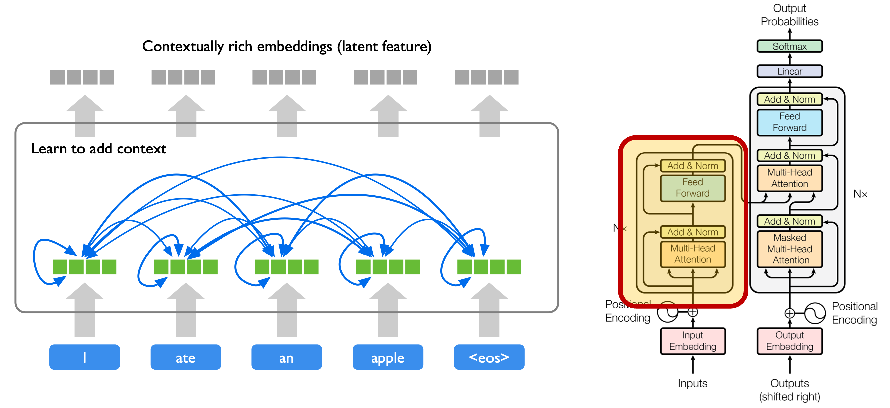

CODE01: 搭建迷你 Transformer(DONE)#
Author by: lwh & ZOMI
Transformer 知识原理#
本节将从 Transformer 的核心定位出发，先介绍其与传统序列模型（如 RNN、LSTM）的核心差异，再拆解编码器的关键模块及各模块的设计目的——帮助读者建立“为什么需要这些模块”的认知，为后续代码实现奠定原理基础。
Transformer 是一种基于 自注意力机制（Self-Attention）的 AI 模型结构，用于处理序列数据（如文本、语音、时间序列等）。相较于传统的循环神经网络（RNN、LSTM），Transformer 有以下几个核心优势：
并行计算能力强：抛弃了序列依赖的结构，使训练更快。这是因为 RNN 类模型需按序列逐步计算，每个时间步的输出依赖前一步结果，而 Transformer 的自注意力机制可一次性处理整个序列，不存在时序依赖关系，能充分利用 GPU 的并行算力；
长距离依赖建模能力强：自注意力机制可以直接建模任意位置间的关系。RNN/LSTM 需通过时序传递间接捕捉长距离关联，易出现信息衰减，而自注意力通过计算任意位置对的注意力权重，可直接捕捉远距离 token 的依赖；
结构模块化：由多层编码器和解码器堆叠构成，易于扩展和修改。每个模块（如注意力、前馈网络）功能独立，可按需调整（如增加注意力头数、修改前馈网络维度）。
在本实验中，仅关注编码器（Encoder）部分的精简实现，其结构主要由以下模块组成：
词嵌入（Embedding）：将输入的 token 序列（如词索引）映射为稠密向量，形成初始特征表示。该过程将离散的符号（如“猫”对应索引 5）转化为连续的向量空间表示，使模型能通过向量运算捕捉语义关联；
位置编码（Positional Encoding）：由于 Transformer 完全抛弃了循环结构，无法像 RNN 那样通过时序顺序感知位置，因此需要手动注入位置信息。本实验使用论文提出的正余弦位置编码，其核心优势在于周期性和泛化性——通过不同频率的三角函数，模型可区分不同位置的相对关系，且能自然适配训练时未见过的更长序列（因位置 pos+k 的编码可通过 pos 的编码推导，无需额外参数学习）；
自注意力机制（Self-Attention）：通过计算每个位置之间的关系（注意力权重），让模型自主学习哪些位置更重要。其本质是对序列的不同部分进行加权组合：对每个 token（Query），计算它与所有 token（Key）的匹配度，再用该匹配度对 token 的信息（Value）加权求和，最终得到融合全局上下文的新表示；
残差连接 + 层归一化（Residual + LayerNorm）：为了解决深层网络中梯度消失和训练不稳定的问题，在注意力层和前馈网络后分别添加残差连接与 LayerNorm。残差连接提供梯度传播“捷径”，避免梯度在深层传递中衰减；LayerNorm 通过对每个样本的特征维度做归一化（均值 0、方差 1），防止数据分布偏移，两者配合大幅提升模型的训练稳定性和表达能力；
前馈网络（Feed-Forward Network）：对每个位置的表示分别通过两层全连接网络，进一步提取特征并引入非线性表达。由于自注意力层是“全局关联”操作，前馈网络则聚焦于“单个位置的局部特征细化”，两者分工协作，让模型既懂全局关系，又能捕捉局部细节。

最终，编码器的每个模块都以“子层 → 残差连接 → 层归一化”的方式组成结构块，构成了一个可堆叠的 Transformer 编码器框架——堆叠层数越多，模型捕捉复杂模式的能力越强（但训练成本也越高）。
Transformer 编码实现#
本节将基于 PyTorch 逐步实现迷你 Transformer 编码器，从基础工具库导入开始，依次实现位置编码、缩放点积注意力、编码器类，并通过假数据测试模型功能。每段代码都会结合原理解释“为什么这么写”，帮助读者将代码与理论对应。
首先导入所需的 PyTorch 和数学库：PyTorch 提供张量操作和神经网络模块，math 库用于计算缩放因子等数学操作，这是实现后续模块的基础依赖。
import torch
import torch.nn as nn
import math
与论文一致使用固定的正余弦位置编码方式。注意编码维度必须为偶数——这是因为编码需将维度平分为两部分，分别填充正弦（sin）和余弦（cos）值，确保每个位置的编码在不同维度上有差异化的频率特征，从而精准区分序列中不同位置的 token。
def sinusoidal_pos_encoding(seq_len: int, d_model: int) -> torch.Tensor:
if d_model % 2 != 0:
raise ValueError("d_model 必须为偶数")
# 生成位置向量和维度向量：pos 对应序列中每个 token 的位置（0 到 seq_len-1），i 对应编码的维度索引（0 到 d_model//2-1）
pos = torch.arange(0, seq_len).unsqueeze(1).float() # shape: (seq_len, 1)，增加维度以便后续广播
i = torch.arange(0, d_model // 2).float() # shape: (d_model/2,)，对应 sin/cos 的频率参数
# 计算频率除数项：10000^(2i/d_model)，频率随维度索引 i 增大而降低（高频对应短距离位置区分，低频对应长距离）
denom = torch.pow(10000, 2 * i / d_model) # shape: (d_model/2,)
angle = pos / denom # shape: (seq_len, d_model/2)，通过广播实现每个位置与每个频率的组合
# 初始化编码矩阵：最终输出为(seq_len, d_model)，每个位置对应 d_model 维的编码
pe = torch.zeros(seq_len, d_model)
# 填入 sin 和 cos：偶数维度用 sin（捕捉位置的“快速变化”特征），奇数维度用 cos（捕捉位置的“缓慢变化”特征）
pe[:, 0::2] = torch.sin(angle) # 偶数维度（0,2,4...）
pe[:, 1::2] = torch.cos(angle) # 奇数维度（1,3,5...）
return pe
这个函数返回一个 (seq_len, d_model) 的位置编码张量，用于为输入序列添加位置信息。该位置编码函数完成后，就可以进入 Transformer 的核心：注意力机制的实现。
这里实现的是点积注意力机制，它会使用三个输入张量：
q（Query）：表示当前 token 想“关注什么”（如当前 token 的特征向量）；k（Key）：表示序列中每个位置的“关键词”（如每个 token 的特征向量，用于与 Query 匹配）；v（Value）：表示每个位置实际携带的“信息内容”（如每个 token 的详细特征，将根据注意力权重被加权）。
注意力机制的核心逻辑是：计算 q 与所有 k 的匹配程度（打分），通过 softmax 将打分转化为注意力权重（权重和为 1，代表每个位置的重要性占比），最后用权重对 v 加权求和，得到融合了全局上下文的新表示。
def scaled_dot_product_attention(q, k, v):
# 计算注意力打分矩阵：q 与 k 的转置点积（捕捉 q 与每个 k 的匹配度），然后除以 sqrt(d_k) 进行缩放
# d_k 是 q/k 的最后一维维度，缩放的目的是：当 d_k 较大时，点积结果方差会增大，导致 softmax 输出过于陡峭（梯度消失）
# 除以 sqrt(d_k)可将方差稳定在 1 左右，保障注意力权重的合理分布
scores = q @ k.transpose(-2, -1) / math.sqrt(q.size(-1)) # shape: (..., seq_len_q, seq_len_k)
# 对打分矩阵使用 softmax，得到注意力权重：权重在 seq_len_k 维度求和为 1，代表每个 k 对当前 q 的重要性
weights = torch.softmax(scores, dim=-1) # shape: (..., seq_len_q, seq_len_k)
# 使用注意力权重加权求和 v，得到注意力输出：融合了所有 k 位置的信息，且突出了重要位置
return weights @ v # shape: (..., seq_len_q, d_v)
接下来构建一个迷你版的 Transformer 编码器类 MiniTransformerEncoder，它整合了前面实现的核心模块，形成一个完整的编码器单元。该类包含以下核心模块：
嵌入层（Embedding）：将输入的 token 索引映射为 d_model 维向量，是模型的初始特征输入；
注意力层（Self-Attention）：通过线性层将嵌入向量映射为 q、k、v，再调用缩放点积注意力，提取全局上下文关联；
前馈网络（Feedforward）：采用“升维-非线性-降维”结构，对每个位置的特征独立细化（与注意力层的“全局关联”形成互补）；
层归一化（LayerNorm）：分别应用在注意力子层和前馈子层之后，配合残差连接缓解梯度消失，保障训练稳定。

此外，为每个位置添加了固定的正余弦位置编码（Positional Encoding），使模型可以识别 token 的先后顺序。需要注意：直接对词嵌入张量 x_embed 与位置编码 pe 使用加法（x = x_embed + pe），这是因为：
x_embed的形状是(batch_size, seq_len, d_model)（本实验中 batch_size=1）；pe的形状是(seq_len, d_model)；PyTorch 的广播机制会自动将
pe扩展为(batch_size, seq_len, d_model)，确保两者维度匹配后逐元素相加。
class MiniTransformerEncoder(nn.Module):
def __init__(self, vocab_size, d_model):
super().__init__()
self.embedding = nn.Embedding(vocab_size, d_model) # 词嵌入层：将 vocab_size 个 token 映射为 d_model 维向量
self.linear_q = nn.Linear(d_model, d_model) # Q 映射层：将嵌入向量转化为 Query（适配注意力计算）
self.linear_k = nn.Linear(d_model, d_model) # K 映射层：将嵌入向量转化为 Key
self.linear_v = nn.Linear(d_model, d_model) # V 映射层：将嵌入向量转化为 Value
self.attn_output = nn.Linear(d_model, d_model) # 注意力输出映射：将注意力结果投影回 d_model 维（增强表达能力）
self.norm1 = nn.LayerNorm(d_model) # 第一个 LayerNorm：用于注意力子层后的归一化
# 前馈网络：两层全连接+ReLU 激活，中间维度设为 d_model*2（升维以捕捉更复杂特征）
self.ffn = nn.Sequential(
nn.Linear(d_model, d_model * 2), # 升维：从 d_model 到 d_model*2
nn.ReLU(), # 非线性激活：引入非线性，提升模型拟合能力
nn.Linear(d_model * 2, d_model) # 降维：回到 d_model，与残差连接维度匹配
)
self.norm2 = nn.LayerNorm(d_model) # 第二个 LayerNorm：用于前馈子层后的归一化
def forward(self, x):
seq_len = x.size(1) # 获取序列长度（x 形状为(batch_size, seq_len)）
x_embed = self.embedding(x) # 词嵌入：(batch_size, seq_len) → (batch_size, seq_len, d_model)
# 生成位置编码并添加到嵌入向量：注入位置信息
pe = sinusoidal_pos_encoding(seq_len, x_embed.size(-1))
x = x_embed + pe # (batch_size, seq_len, d_model)
# 自注意力子层：计算全局上下文关联
q = self.linear_q(x) # Query 映射：(batch_size, seq_len, d_model) → (batch_size, seq_len, d_model)
k = self.linear_k(x) # Key 映射
v = self.linear_v(x) # Value 映射
attn = scaled_dot_product_attention(q, k, v) # 注意力计算：(batch_size, seq_len, d_model)
# 残差连接 + LayerNorm：x（原始输入）与注意力结果相加，再归一化（缓解梯度消失）
x = self.norm1(x + self.attn_output(attn))
# 前馈子层：细化每个位置的局部特征
ff = self.ffn(x) # 前馈计算：(batch_size, seq_len, d_model) → (batch_size, seq_len, d_model)
# 残差连接 + LayerNorm：再次通过残差和归一化稳定训练
x = self.norm2(x + ff)
return x # 输出：(batch_size, seq_len, d_model)，每个位置的上下文特征向量
这一结构就是一个基本的 Transformer 编码器块，具备捕捉上下文关联、感知位置信息、细化局部特征的核心能力，是更复杂 Transformer 模型（如 BERT、GPT）的基础单元。
为了测试模型输出是否符合预期，我们用一个假输入 [3, 1, 7]（代表序列长度为 3 的 token 索引）来运行前向传播。这里 batch_size=1（单条样本），模型会输出每个 token 的上下文特征向量，我们通过打印输出验证模型功能是否正常。
# 初始化模型：词汇表大小 50（假设包含 50 个不同 token），模型维度 d_model=16（小维度便于测试）
model = MiniTransformerEncoder(vocab_size=50, d_model=16)
# 假输入：shape 为[1, 3] → (batch_size=1, seq_len=3)
dummy_input = torch.tensor([[3, 1, 7]])
# 前向传播：获取模型输出
output = model(dummy_input)
print("=== 输出 ===")
print(output.detach().numpy()) # detach() 脱离计算图，避免梯度干扰，转为 numpy 便于查看
print("=== 结束 ===")
=== 输出 ===
[[[-1.5413152 1.6801366 0.05804453 0.24212095 -1.0774754
0.02384599 -0.12485133 -0.6640581 -0.88564116 1.0022273
-1.7447253 -0.11834528 -0.32912147 0.8888434 1.3979812
1.1923339 ]
[ 0.7319907 0.89123964 0.20003487 -0.07367807 -1.0843173
0.2291747 -1.023271 0.09876721 -0.5554284 0.05615921
-0.26637512 -1.0664971 0.01956824 1.8496377 -1.9267299
1.9197246 ]
[ 1.0861049 -0.38979262 1.8310152 0.47594324 -0.07559342
-0.44681358 -1.166736 1.6186275 -1.5705074 -0.19102472
0.40794823 1.0515163 -1.3678914 -0.19411024 -1.1033916
0.03470579]]]
=== 结束 ===
从输出结果可见，模型成功输出了形状为 (1, 3, 16) 的张量（对应 batch_size=1, seq_len=3, d_model=16），每个 token 都得到了 16 维的上下文特征向量——这表明迷你编码器的所有模块都正常工作，实现了预期功能。至此完成了一个最小的 Transformer 编码器搭建。它结构清晰、功能完整，非常适合用作 Transformer 学习的入门代码框架。
总结与思考#
本实验通过“原理拆解→代码实现→功能验证”的流程，完成了迷你 Transformer 编码器的搭建。明确了 Transformer 编码器的核心模块分工——词嵌入负责“离散转连续”，位置编码解决“时序感知”，自注意力捕捉“全局关联”，残差+LayerNorm 保障“训练稳定”，前馈网络细化“局部特征”，各模块协同实现序列建模。